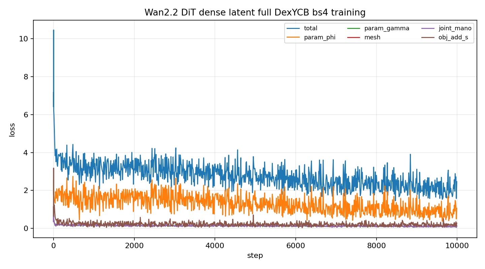
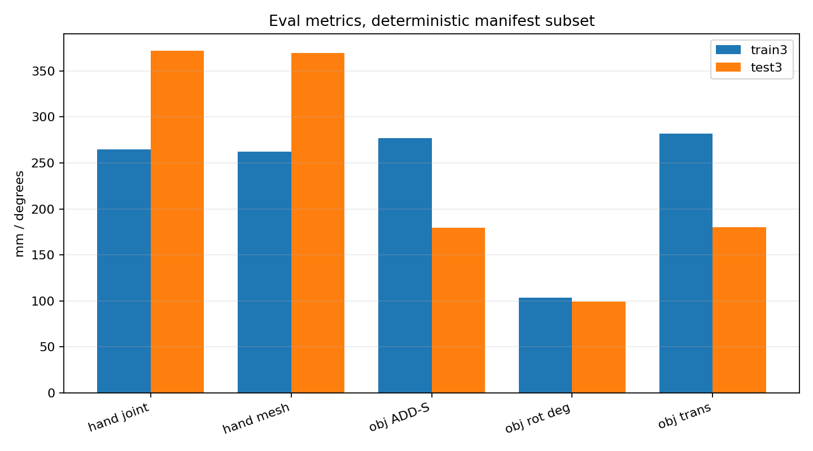

Tasks / experiments
| Task | Status | Commit | What landed |
|---|
| E1 | PASS | | Confirmed ACP job pt-ohmi8cz3 completed and final.pt exists. |
| E2 | PASS | | Enabled native-4rc-latent eval forward for Wan2.2 DiT last-sample features. |
| E3 | PASS | | Ran deterministic train3/test3 eval and generated RGB/3D visualization assets. |
Commits
| SHA | Type | Subject |
|---|
| 799db1f | code | feat(hoi3r): use wan22 thfm dense latents |
| 8e8e5c5 | code | fix(hoi3r): pass wan timestep grid for batches |
| f4fabdb | code | feat(hoi3r): enable wan22 dense latent eval |
Module / branch state
| Aspect | Current state |
|---|
| ACP job | pt-ohmi8cz3, bs=4, clip_len=13, n_gpus=1, output seed0/final.pt |
| Feature | Wan22DitLastSampleExtractor uses the DiT -v last sample fed toward VAE decoder; no hand query insertion, no LoRA. |
| Coordinate contract | camera0/frame-0 camera coordinates; RGB overlay uses hand_anchor_mode=none and pred_object_mode=camera0. |
| Eval scope | Deterministic subset: first 3 train manifest entries and first 3 test manifest entries. |
Open issues & next steps
| Task | Priority | What's needed |
|---|
| P1 | P1 | Decide whether to run full-manifest eval or change the Wan2.2 dense latent adapter after reviewing published metrics and videos. |
Caveats
- Eval is a small deterministic subset, not full DexYCB test.
- Training used 1 GPU because p1/share-space 4-card and 8-card submissions were rejected by quota.
- The adapter path was launched through native_4rc_one_sequence_overfit.py pointed at the full manifest; p2_train.py native-4rc-latent remains intentionally incomplete.
Eval metrics
| Split | Windows | Hand joint mm | Hand mesh mm | Obj ADD-S mm | Obj rot deg | Obj trans mm | Det F1 | Side acc |
|---|
| train3 | 12 | 264.828 | 262.502 | 276.876 | 103.680 | 281.719 | 1.000 | 0.583 |
| test3 | 15 | 371.804 | 369.467 | 179.832 | 99.135 | 179.985 | 1.000 | 0.533 |
metrics_summary.csv · metrics_summary.json
Plots


How to resume
Paste this into a new Claude Code session:
Read https://haonanhe.github.io/HOI3R-project-tracking/updates/2026-05-12-session-summary-wan22-thfm-dense-full-dexycb-bs4-eval-publish.json
and continue from tasks_pending[0] (P1 [P1]: Decide whether to run full-manifest eval or change the Wan2.2 dense latent adapter after reviewing published metrics and videos.).
Context: branch feat/dcf-native-4rc-latent@f4fabdb66e31fde5f11746c8aaece00431d47317; worktree /mnt/afs/haonan/hoi3r/HOI3R/.worktrees/feat-dcf-native-4rc-latent.